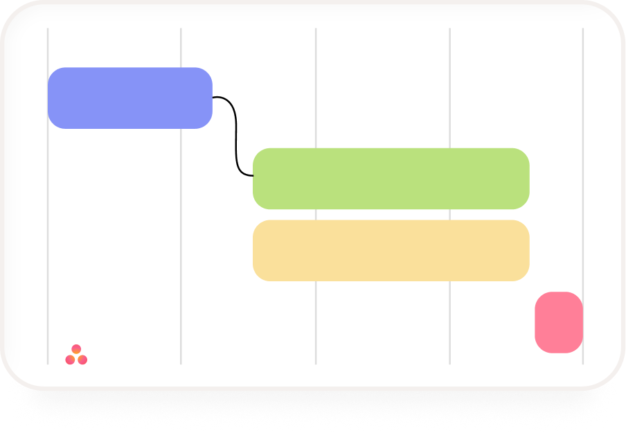
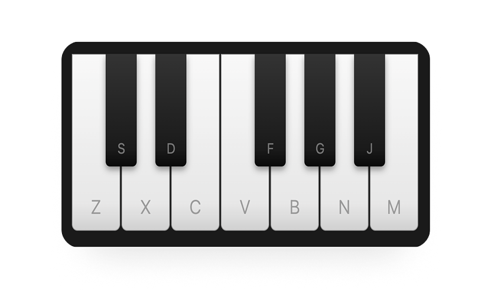

Introduction
At Asana I worked on core workflows and cross-product surfaces—balancing density, discoverability, and calm so teams could plan work without drowning in UI.
Replace with your narrative: pillars you owned, roadmap bets, and how design partnered with research and engineering.
Timeline & planning
Showcase scheduling, workload, or portfolio views you improved—pair visuals with the user problem.

Timeline — describe the problem, iteration, and result.

Leadership
As a lead and manager, add how you grew designers, ran crit, or built alignment across teams—keep it concrete and scannable.
Connect
Closing thought, credits, or how to follow up—keep it short.